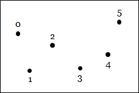
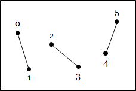
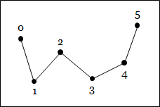
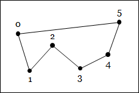
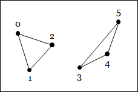
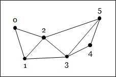
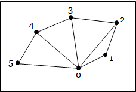

In the last chapter, we introduced a way to represent simple geometric concepts such as points, vectors, lines, and circles with numbers. In this chapters, we will discuss how these simple geometric concepts can be combined to build more complex shapes that can be used to build scenes in computer graphics applications.
We note first that there are many ways to represent shapes with numbers, but we shall focus one particular method: modeling with meshes. This is the method used by the graphics pipeline, the rendering algorithm implemented in modern GPUs. We choose the method because this book is mainly about teaching you how use WebGL, a software library that control GPUs to draw 3D shapes in real time.
To drop a few names, other methods include point clouds, splines, distance fields, and volumetric data. We will not cover them in this book, but curious readers can consult other computer graphics textbooks to learn more about them.
The graphics pipeline is designed to render three types of simple geometric concepts: points, line segments, and triangles. More complex shapes such as circles, ellipses, chairs, human figures, and so on must be built from these objects in order to be rendered by the graphics pipeline.
The three geometric concepts have one thing in common: they can be specified by points.
In computer graphics, a point used to defined a shape is called a vertex. A vertex can have one or more attributes, which is a fancy term for data associated with the point. Simply put, a vertex is a point that carries some data with it.
The most important and mandatory attribute of a vertex is its position in 3D space. We know from the previous chapter that a position can be represented by 3 floating-point numbers.
Other widely used attributes include:
We know from Chapter 2 that a color can be represented by three numbers: $R$, $G$, and $B$. We will discuss what a normal vector is later in the chapter, but, since it is a vector in 3D space, it can be represented by their coordinates, which are 3 numbers. Texture coordinates will be discussed in Chapter 17, but they can be represented by 2 numbers most of the time.
More concretely, we can discuss a vertex in terms of the Javascript language, which we will be programming with. A vertex can be thought of as a Javascript object. Its attributes can be thought of the object's (Javascript) properties. As an example, here is a vertex written in the JSON format.
{
"position": [1.0, 2.0, 3.0],
"normal": [0.0, 1.0, 0.0],
"color": [1.0, 0.0, 1.0],
"texCoord": [0.5, 0.5]
}
We said that, in order to use the graphics pipeline to render complex shapes, we must model them with simple shapes, which in turn can be constructed from vertices. So, a shape to be rendered by the graphics pipeline must be made from a collection of vertices. A collection of related vertices is often called a point cloud.
Typically, all data of a point cloud is stored in one or more arrays of numbers, where each such array is called a buffer. In general, there are two ways to organize vertex data into buffers.
To illustrate the above data layouts, let us consider a small point cloud with 3 vertices, each having a position attribute, and a texture coordinate attribute.
| Vertex Number | #0 | #1 | #2 |
| Position | $(0.0, 0.1, 0.2)$ | $(1.0, 1.1, 1.2)$ | $(2.0, 2.1, 2.2)$ |
| Texture coordinate | $(0.50, 0.51)$ | $(0.60, 0.61)$ | $(0.70, 0.71)$ |
If we were to construct an interleaved buffer of the above point cloud, the buffer look like the following.
| 0.0 | 0.1 | 0.1 | 0.51 | 0.52 | 1.0 | 1.1 | 1.1 | 0.61 | 0.62 | 2.0 | 2.1 | 2.2 | 0.71 | 0.72 |
In the Javascript language, this would be equivalent to specifying the following array.
const interleavedBuffer = [
0.0, 0.1, 0.2, // Vertex #0's position
0.50, 0.51, // Vertex #0's texture coordinate
1.0, 1.1, 1.2, // Vertex #1's position
0.60, 0.61, // Vertex #1's texture coordinate
2.0, 2.1, 2.2, // Vertex #2's position
0.70, 0.71 // Vertex #2's texture coordinate
];
On the other hand, if we were to create separate buffers for the point cloud. We would have the following two buffers.
| Position: |
|
|||||||||
| Texture coordinate: |
|
|||||||||
In the Javascript language, the above is equivalent to the following code.
const positionBuffer = [
0.0, 0.1, 0.2, // Vertex #0's position
1.0, 1.1, 1.2, // Vertex #1's position
2.0, 2.1, 2.2, // Vertex #2's position
];
const texCoordBuffer = [
0.50, 0.51, // Vertex #0's texture coordinate
0.60, 0.61, // Vertex #1's texture coordinate
0.70, 0.71 // Vertex #2's texture coordinate
];
In the context of the graphics pipeline, a point cloud alone is not enough to represent shapes. However, we also said earlier that a point cloud can represent shape on its own. This approach is not at all trivial because we immediately see a problem: a point cloud has no contiguous surface or volume that we typically associate with real world objects. In other words, the space between the points are empty, and the empty space would manifest if we look at the object from a distance close enough. As a result, any method that uses point clouds alone to represent shapes must come up with a way to fill these "holes." In any case, this is not our problem because we will use point clouds with extra information.
We said earlier that we may specify shapes by specifying connections between vertices. These connections are the extra information that allows us to fill the empty space between them. A shape specified by connecting vertices is called a primitive.
Different implementations of the graphics pipeline have different primitives they support. In general, though, the primitives are some forms of points, lines, or triangles. WebGL, the implementation that we will use, supports the following primitives.
|  | |||
| Points | |||
|  |  |  | |
| Lines | Line strip | Line loop | |
|  |  |  | |
| Triangles | Triangle strip | Triangle fan |
Internally, WebGL uses integer constants to indicate primitive types. Each constant also has a namethat can be used to retrieve them more conveniently in Javascript programs, and we will make use of these names extensively in later chapters. The constants and their names are given in the table below.
| Primitive | Constant Value | Constant Name |
| Points | 0 | POINTS |
| Lines | 1 | LINES |
| Line loop | 2 | LINE_LOOP |
| Line strip | 3 | LINE_STRIP |
| Triangles | 4 | TRIANGLES |
| Triangle strip | 5 | TRIANGLE_STRIP |
| Triangle fan | 6 | TRIANGLE_FAN |
In WebGL, shapes are modeled by meshes. A mesh is a point cloud together with information about how to connect the vertices to form primitives. A mesh can contain many primitives, but in general all the primitives would be of the same type. So, we may have a triangle mesh or a wireframe (a mesh of line segments). Meshes of other primitives are possible, but they are not as frequently used as the two we just mentioned.
If we were to represent a mesh as a Javascript object, the object would contain three important pieces of data.
Below is a mesh representing a $1 \times 1$ square in the $xy$-plane whose lower-left endpoint is the origin $(0,0,0)$.
const TRIANGLES = 4;
const mesh = {
"primitive": TRIANGLES,
"positions": [
0.0, 0.0, 0.0, // Vertex #0's position
1.0, 0.0, 0.0, // Vertex #1's position
1.0, 1.0, 0.0, // Vertex #2's position
0.0, 1.0, 0.0 // Vertex #3's position
],
"colors": [
1.0, 1.0, 1.0, // Vertex #0's color (white)
1.0, 1.0, 0.0, // Vertex #1's color (yellow)
1.0, 0.0, 1.0, // Vertex #2's color (magenta)
0.0, 1.0, 1.0 // Vertex #3's color (cyan)
],
"indices": [
0, 1, 2, // Triangle #1
0, 2, 3 // Triangle #2
]
};
We see that there are 4 vertices in the mesh. Each vertex has two attributes, its position and color. The vertices are used to form two triangles, and a triangle is represented by 3 indices in the index buffer, resulting in 6 numbers in total. An advantage of this representation is that the data of a vertex can be used multiple times (Vertex 1 and Vertex 2 are used 2 times), saving a lot of space.
{kind=link}